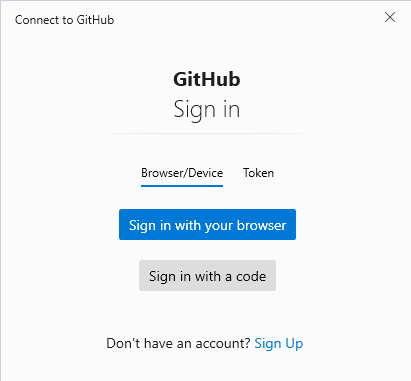
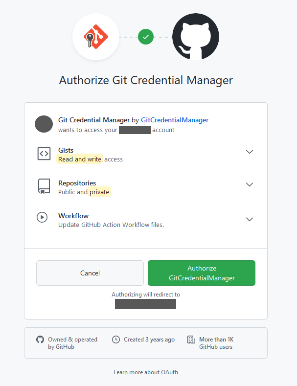
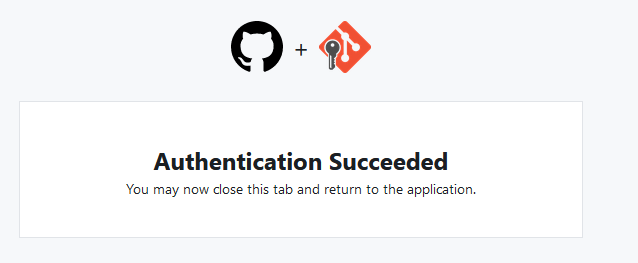

3 Common Processes
3.1 Rename Default Branch from Master to Main
On GitHub’s website click on # branches icon at the top left of the code on the home page of a repository. You should see a window that specifies all the current branches as well as the default branch. Click on the edit icon (pencil on far right) to rename a branch.
After renaming the branch on the web interface, then go to your local clone, open bash and type in the following:
git branch -m master main
git fetch origin
git branch -u origin/main main
git remote set-head origin -a3.2 Cache GitHub Credentials - Windows
Old way, view in Wayback Machine
New way, using GitHub CLI or Git Credential Manager
- After installing git on a new machine, I cloned a test repository (via an RStudio .Rproj) made a small text edit and committed the change. When I tried to push the commit to GitHub the following window popped-up asking me to sign in. I selected Sign in with your browser.

- After selecting Sign in with your browser, a window popped up in my default browser where I signed in to my GitHub account. The next screen asked to authorize the credential manager, which I did by selecting Authorize GitCredentialManager.

- After selecting Authorize GitCredentialManger the following screen appeared stating that authentication succeeded. After this, I am able to push/pull from my machine to GitHub.

3.3 Git Bash Terminal in R Studio
Tools > Global Options > Terminal > New Terminals open with: Git Bash
3.4 Update Remote Link
Remote link will need to be updated if the repo changes names or ownership.
- Go into repository on GitHub, click the green “Code” button and copy the HTTPS url
- Got to the repository folder on your machine, right click and select “Git Bash Here”
-
Change the remote link with the following:
git remote set-url origin NEW_URL -
Check to see if the link has been updated using:
The URL should now be the updated version.git config --get remote.origin.url